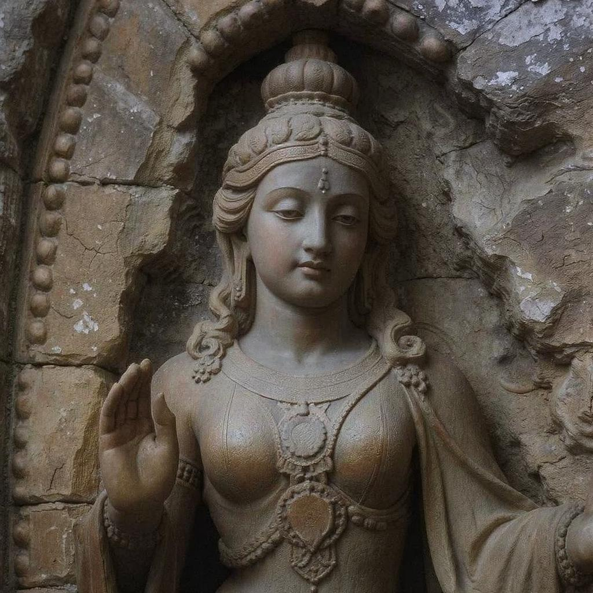

Koleksi Unggulan

Artefak Perunggu Prasejarah
>Artefak perunggu prasejarah ini merupakan tambahan baru pada koleksi kami, menampilkan detail yang menakjubkan.
Pelajari Lebih Lanjut
Guci Antik Kerajaan
Guci antik ini merupakan contoh peralatan rumah tangga dari kerajaan Jawa kuno, dihiasi motif khas yang melambangkan kemakmuran dan seni tinggi.
Pelajari Lebih Lanjut
Prasasti Tarumanegara
Prasasti batu dari abad ke-5 yang menjadi bukti keberadaan Kerajaan Tarumanegara, salah satu kerajaan tertua di Nusantara.
Pelajari Lebih Lanjut